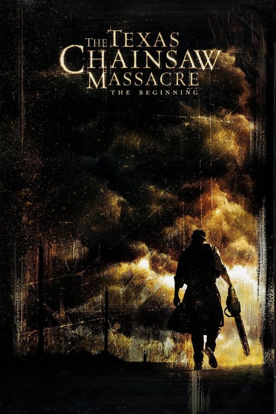

|  | O Massacre da Serra Elétrica
Direção: Tobe Hooper
Roteiro Tobe Hooper, Kim Henkel
Elenco: Marilyn Burns, Allen Danziger, Paul A. Partain
Em 1973, a polícia texana deu como encerrado o caso de um terrível massacre de 33 pessoas provocado por um homem que usava uma máscara feita de pele humana. Nos anos que se seguiram os policiais foram acusados de fazer uma péssima investigação e de terem matado o homem errado. Só que dessa vez, o único sobrevivente do massacre vai contar em detalhes o que realmente aconteceu na deserta estrada do Texas, quando ele e mais 4 amigos estavam indo visitar o seu avô. |
|
Acesse mais em YouTube SESSÕES
|